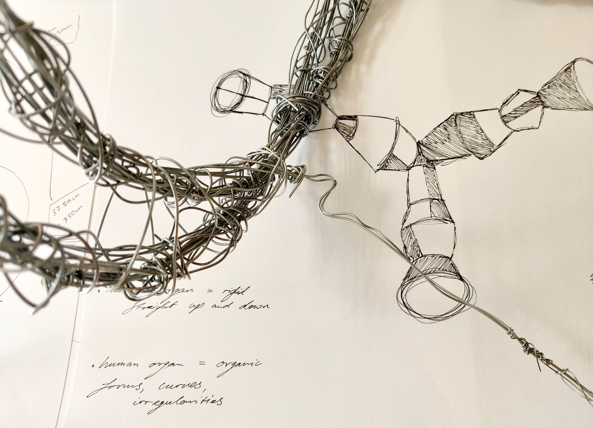
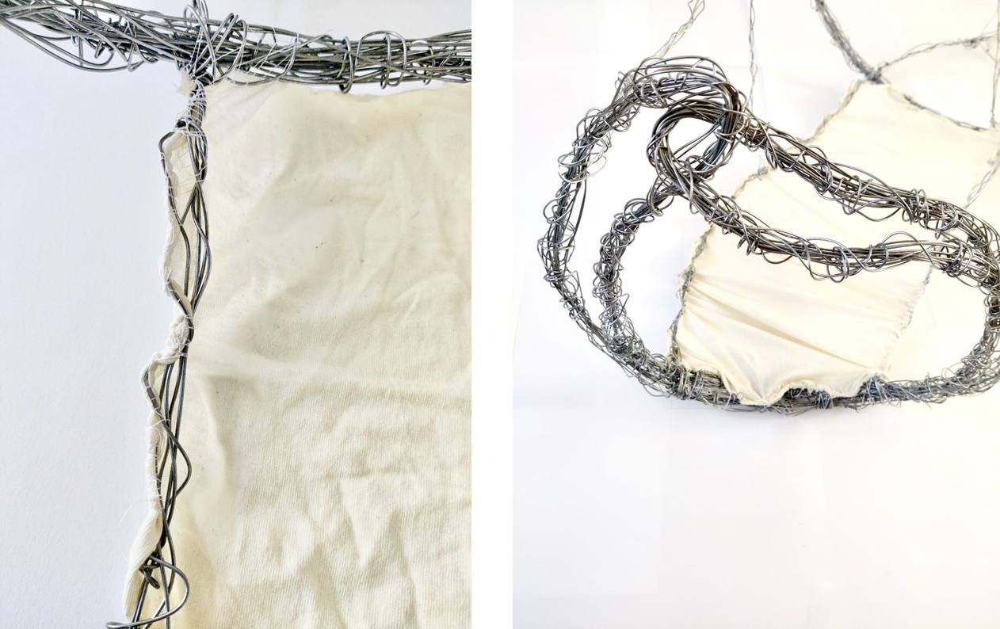
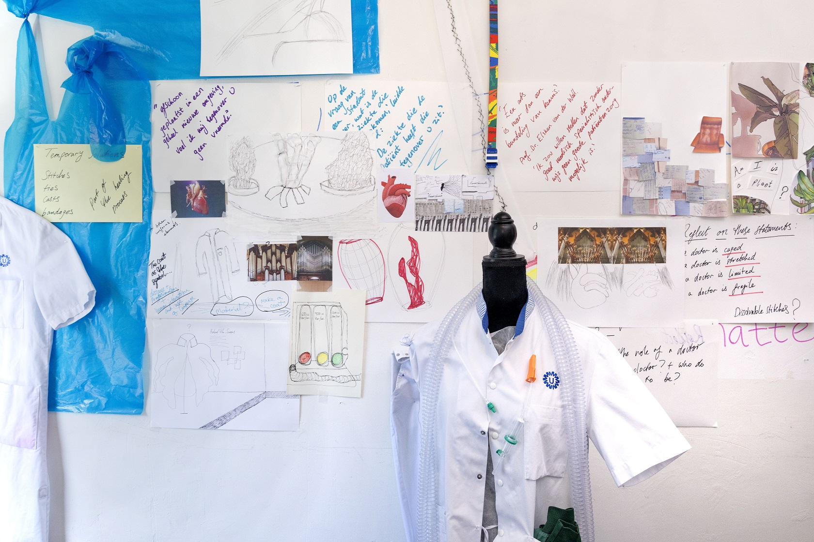
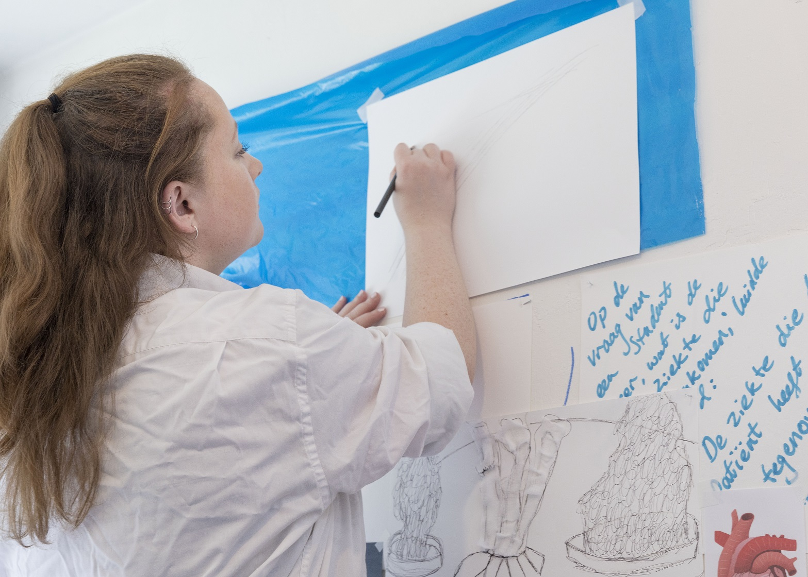

K.F. Hein x UMC
K.F. Hein Fond's Kunst Participatie Project
In collaboration with UMC Utrecht
blog 1 | blog 2 | blog 3
About
-
The K.F. Hein Fund annually assigns one HKU exam candidate for the Art Participation
Project. In collaboration with the UMC Utrecht, I was selected to make a new artwork
for the educational building (A.A. Hijmans van den Berghgebouw) from the UMC.
The students and/ or employees of UMC Utrecht
were actively involved in the development of the work.



